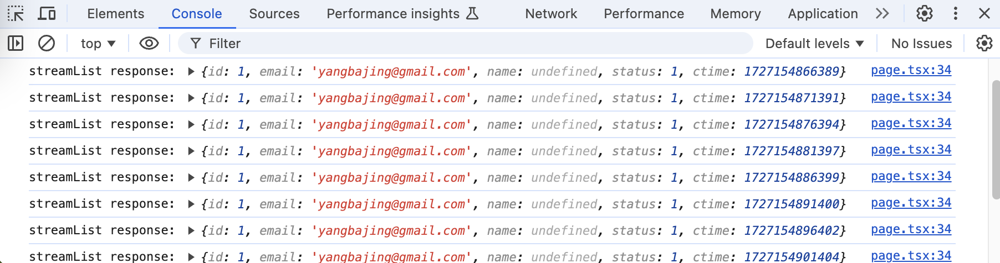

gRPC-Web
什么是 gRPC-Web
gRPC-Web 是一个基于 gRPC 的跨平台 Web 客户端。使用 gRPC，可以在 .proto 文件中定义服务，并使用任何一种支持 gRPC 的编程语言编写客户端和服务端实现，而这些语言反过来又可以在从大型数据中心内的服务器到个人的平板电脑等各种环境中运行——不同语言和环境之间通信的所有复杂性都由 gRPC 来处理。还可以获得使用 protocol buffer 的所有优势，包括高效的序列化、简单的IDL（Interface description language）、易用的API接口和可控的更新兼容性等。gRPC-Web 可以让你使用惯用的 API从浏览器访问 gRPC 服务。
gRPC-Web vs REST
gRPC-Web 与 REST 比较有如下优势：
- 强类型安全和更丰表现力的类型系统。相对 RESTful 常用的 JSON 类型，protobuf 支持更丰富的抽像。
- 一致的代码生成方式。在使用 REST 时，通过会通过 OpenAPI 规范定义来生成前端代码，但每个实现语言的 REST 客户端都有不同的代码生成方式以及对 enum 类型的支持一直不好，这需要开发者手动维护。而 gRPC-Web 则通过 protobuf 生成前端代码，可以复用后端接口。
- 可复用后端 gRPC 微服务接口，减少重复工作量
gRPC-Web vs GraphQL
与 REST 一样，gRPC-Web 也能很好的融入 HTTP 生态架构中，这一点和 GraphQL 不一样。在 GraphQL 中因为所有的接口都在 body（JSON对象）中以字段的形式定义，你很难在 HTTP 网关/代理上做基于 URI 拦截的统一接口权限校验。GraphQL Federation 可以实现多个后端 GraphQL 服务 API 的聚合（Apollo Router是其中一个很好的实现），但会给整个架构引入一层抽象并带来复杂性。这时候，也许我们需要综合考虑引入 GraphQL 的收益。
gRPC-Web/gRPC 服务方法直接暴露到 HTTP URI 上，这可以很方便的统一做基于 URI 拦截的权限校验功能。同时，对于多个后端服务的聚合，可复用 HTTP 服务器的反向代码（如 Nginx 的 proxy_pass）。
gRPC-Web 协议
由于浏览器的限制，Web 客户端库实现的协议与 gRPC 协议不同。该协议旨在使代理能够轻松地在协议之间进行转换，因为这是最可能的部署模型。同时，也允许实现语言在服务中直接支持 gRPC-Web。
gRPC-Web 目前支持 2 种 RPC 模式：
- 一元（Unary）RPC，支持二进制 protobuf 格式。如：
application/grpc-web+proto - 服务端流式RPC，注意： 仅支持文本格式，数据将被 base64 编码。如：
application/grpc-web-text+proto
当前还不支持客户端/服务端双向流（bidi-streaming），需要等待 whatwg fetch/streams 最终确定并在现在浏览器中实现后支持，到时还将支持流量控制（flow-control）
gRPC-Web 的设计目标
- 采用与
application/grpc相同的框架 - 与 HTTP/2 帧解耦，这些帧永远也不会被浏览器直接暴露（支持 HTTP/1 访问）
- 支持文本流（例如 base64），以提供更好的浏览器兼容性（支持 IE-10）
与原始 gRPC 协议的差异
Content-Type
application/grpc-web
- Content-Type 需要指定
application/grpc-web+[proto, json, thrift]之一 - 当在
Content-Type中缺少消息格式时，接收方应假定默认值为+proto
application/grpc-web-text
- 流（streaming）类型编码为文本串
- 如：
application/grpc-web-text+[proto, thrift]
HTTP 线（wire）协议
- 不依赖于 HTTP/2，支持 HTTP/1.1
- 使用 EOF（end of body）来关闭流
HTTP/2 相关行为
- 不支持使用
stream-id - 不支持使用
go-away
消息帧（framing）
- 响应状态编码为响应体的一部分
- 以 HTTP/1 Header 编码的键值对（不包括终止换行）
- 第一个 gRPC 帧字节的第8位（MSB）
- 0: 数据
- 1: trailers
10000000b: 未压缩的 trailer (作为 body 的一部分)
10000001b: 压缩的 trailer
- 响应的最后一条消息必须是 trailer，由实现强制执行
- 只有 trailer 的响应，tailer 可以和 response header 一起发送，允许 body 没有消息
User Agent
- 不要设置
User-Agent，应由浏览器自动设置 - 使用
X-User-Agent: grpc-web-javascript/0.1
文本编码（response）流
- 客户端库应通过
Accept头向服务器指示响应流需要进行文本编码，例如在使用 XHR 时或由于 XHR 的安全策略。
Accept: application/grpc-web-text
- 默认文本编码是
base64
- 注意，“Content-Transfer-Encoding: base64”不应使用。由于在分隔消息时流内的 base64 填充，整个响应体不一定是有效的 base64 编码实体。
- 服务器运行时将始终以原子方式对 gRPC 消息进行 base64 编码和刷新，但客户端库不应假设 base64 填充总是在消息帧的边界上发生。也就是说，实施可能会在运行时需要刷新字节缓冲区时发送带有潜在填充的 base64 编码 块。
使用 Tonic 实现 gRPC-Web 服务端
tonic-web 使 tonic 服务无需外部代理就能够直接处理来自 gRPC-Web 客户端的请求。它通过用一个 tower 服务 包装单个 tonic 服务来实现这一点，该服务在协议之间进行转换并处理 cors 请求。
启用 gRPC-Web 支持
在 tonic 服务中启用 gRPC-Web 支持需要添加 tonic-web 依赖，在终端执行以下命令依赖：
cargo add tonic-web tokio-stream
在创建 tonic Server 时，有两种方式启用 gRPC-Web 支持。
方式一：为单个服务启用 gRPC-Web 支持
#![allow(unused)] fn main() { Server::builder() .accept_http1(true) // 使用 `tonic_web::enable` 函数为需要的服务单独启动 gRPC-Web 支持 .add_service(tonic_web::enable(greeter)) // ... }
方式二：为多个服务启用 gRPC-Web 支持
#![allow(unused)] fn main() { Server::builder() .accept_http1(true) // 应用 gRPC-Web 转换层，为所有服务启用 gRPC-Web 支持 .layer(GrpcWebLayer::new()) .add_service(greeter) // ... }
两种实现方式都需要启用 http1（.accept_http1(true)）支持。tonic-web 除启用 gRPC-Web 支持外，还将为相关服务启用 cors。
serverside streaming
定义一个 gRPC 服务端流式 RPC，完整定义见：user.proto。
service User {
rpc StreamList(StreamListRequest) returns (stream UserDto) {}
}
当前 tonic 的 gRPC-Web 实现只支持单向的服务端流式 RPC，所以这里只有返回值 UserDto 是流式响应的。
实现 Rust 服务端流代码，完整代码见：user.rs。
#![allow(unused)] fn main() { use tokio::sync::mpsc; use tokio_stream::{wrappers::ReceiverStream, Stream, StreamExt}; #[tonic::async_trait] impl User for UserService { // 定义返回值类型，使用 Pin 钉住 Stream，确保在异步代码里不会出错 type StreamListStream = Pin<Box<dyn Stream<Item = Result<UserDto, Status>> + Send>>; async fn stream_list( &self, request: Request<StreamListRequest>, ) -> Result<Response<Self::StreamListStream>, Status> { // 创建一个无限重复的迭代器 let repeat = std::iter::repeat_with(|| UserDto { id: 1, email: "yangbajing@gmail.com".to_string(), status: 1, ctime: now_millis(), // 每次生成元素时都将获取当前最新时间戳 ..Default::default() }); // 基于 repeat 创建一个流，每 5 秒生成一个元素 let mut stream = Box::pin(tokio_stream::iter(repeat).throttle(Duration::from_secs(5))); // 创建一个多路异步通道，缓冲区大小为 16 let (tx, rx) = mpsc::channel(16); // 启动一个异步任务 tokio::spawn(async move { // 不断的从 stream 中获取元素，并将其发送到 tx 通道 while let Some(item) = stream.next().await { match tx.send(Result::<_, Status>::Ok(item)).await { Ok(_) => { // item（服务器响应）已排队等待发送到客户端 } Err(_) => { // output_stream 是从 rx 构建的，两者都被丢弃了 break; } } } println!("\tclient disconnected"); }); // 将接收通道 rx 构建为一个接收者流，并将它包装成 gRPC Response 类型返回给客户端 let output_steam = Box::pin(ReceiverStream::new(rx)); Ok(Response::new(output_steam)) } } }
代码中包含了必要的注释，但这里还是要说明下 Pin 的使用。在 Rust 异步编程中，Pin 主要用于解决异步代码中的生命周期和内存布局问题，特别是在涉及到异步上下文切换的情况时。在定义 stream 和 output_steam 时都使用了 Box::pin 来将变量 钉住，原因有：
- 确保异步上下文中的不可变性：在异步函数中，编译器要求所有可能被异步执行引用的数据必须是固定的（即不可移动）。
Pin确保这些数据在异步上下文中不会被移动，从而避免数据移动导致的潜在问题 - 防止数据意外移动：
stream是一个异步流，它会在异步任务中不断生成新的数据。如果不使用Pin，在异步上下文中可能会发生意外的数据移动，导致运行时错误或不一致的行为 - 确保资源被正确管理：
output_stream是基于多路异步通道 (rx) 构建的接收者流。Pin保证了这个流在异步上下文中不会被移动，从而确保其内部资源（如缓冲区）在整个异步操作过程中得到正确的管理。
使用 nice-grpc 实现 gRPC-Web 客户端
nice-grpc-web 提供了对 gRPC-Web 客户端很好的支持，它将生成用户友好的 typescript 代码。
下面是在 React Effect 中使用 nice-grpc-web 调用 serverside streaing 客户端的代码示例（完成代码见：page.tsx）：
useEffect(() => {
// 定义一个 AbortController
const abortController = new AbortController();
async function streams() {
// 将 abortController.signal 作为选项调用 streamList 方法
const asyncResponse = userClient.streamList({}, { signal: abortController.signal });
// 在 for await 循环中，等待每个响应并在浏览器控制台中输出。
for await (const res of asyncResponse) {
console.log("streamList response:", res);
}
}
streams().catch((error) => {
if (isAbortError(error)) {
// 忽略 AbortError 错误
return;
}
throw error;
});
// 定义 Effect 函数返回的清理函数，以确保在组件卸载时取消请求，避免网络资源泄漏
return () => abortController.abort("cleanup");
}, []);
上面代码包含了必要的注释。我们启动 next.js 服务 pnpm dev。
启动 tonic-getting 服务 RUST_LOG="tower_http=debug" cargo run。
从浏览器访问 http://localhost:3000/profile 地址，并打开开发者工具，在浏览器控制台可以看到如下输出：

小结
本文介绍了 gRPC-Web 的基本概念，和使用 gRPC-Web 的收益，并展示了如何使用 tonic 和 nice-grpc-web 实现一个简单的 gRPC-Web 客户端。当前 gRPC-Web 还不支持双向流通信，但 whatng 项目正在开发中，待其稳定以后就可以将 gRPC 强大的双向流处理功能引入到 gRPC-Web 中。
完整代码可在 https://github.com/yangbajing/grpc-microservices-with-rust/ 仓库获取。tonic-getting 为 gRPC 后端项目，nextjs-geting 为 Web 前端项目。